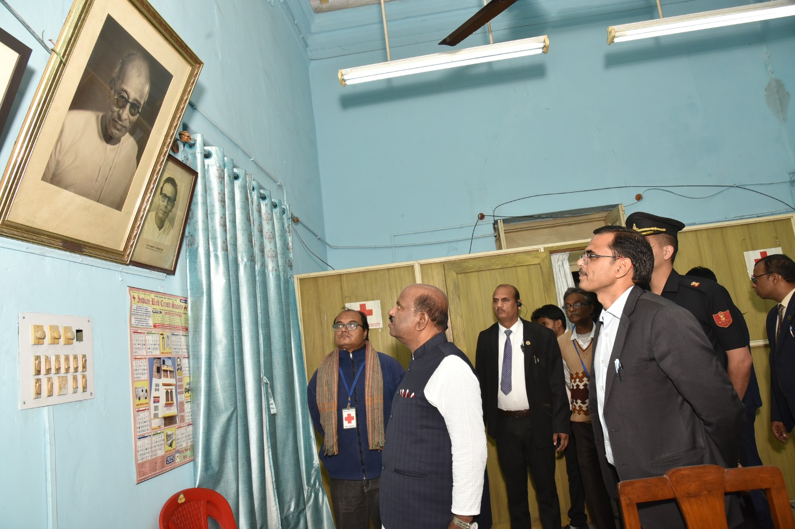
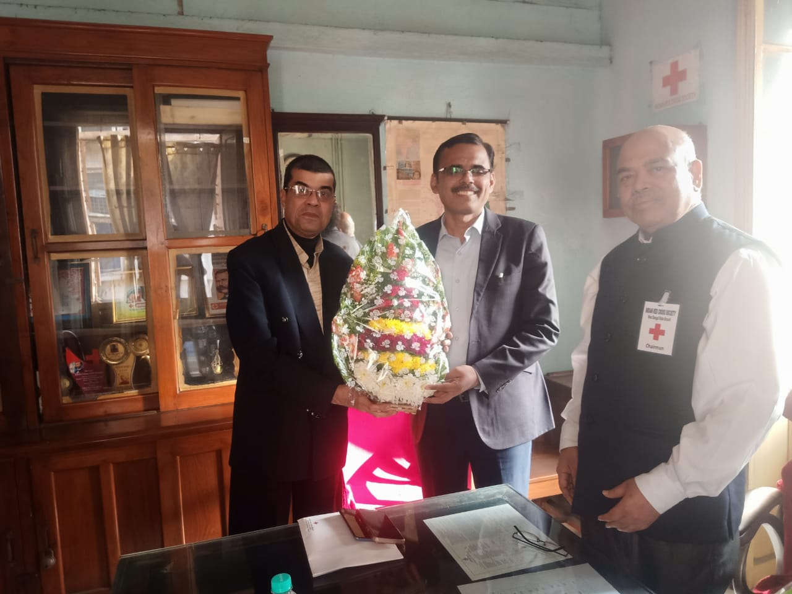

Indian Red Cross Society West Bengal State Branch
The Indian Red Cross Society West Bengal branch (IRCS WB) is a voluntary humanitarian organization to protect human life and health based in West Bengal, as the name suggests. It is part of the International Red Cross and Red Crescent Movement and shares the Fundamental Principles of the International Red Cross and Red Crescent Movement. The society's mission is to provide relief in times of disasters/emergencies and promote health and care of vulnerable people and communities. It has 21 district branches in the state and 12 sub-division branches. The president of IRCS WB is the governor of West Bengal.

Training on First Aid/Disaster Management at IRCS WBSB HQ

Hon'ble Governor of WB & the President of IRCS WBSB visited SHQ

Appointment of the General Secretary Mr.Sandeep Kumar Singh